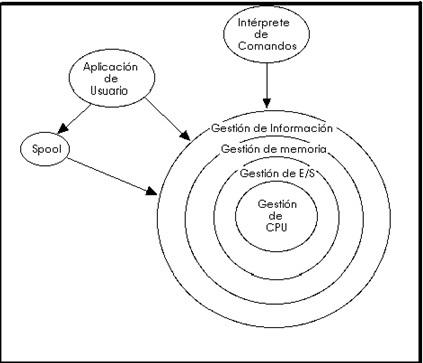

Estructura de un sistema operativo
Se considera la organización interna del sistema operativo y para ello debemos observar dos tipos de requisitos:
1.- Requisitos del usuario:
- Sistema fácil de usar y aprender
- Seguro
- Rápido
- Adecuado al uso al que se quiere destinar
2.- Requisitos de software:
- Mantenimiento
- Forma de operación
- Restricciones de uso
- Eficiencia
- Tolerancia frente a errores
- Flexibilidad
A medida que fueron creciendo las necesidades de los usuarios y se perfeccionaron los sistemas, se hizo necesaria una mayor organización del software del sistema operativo, donde una parte del sistema contenía subpartes y esto organizado en forma de niveles. Es una estructura jerárquica, con mayor organización del software del sistema operativo. El sistema operativo se divide en partes o niveles, cada uno perfectamente definido y con un claro interface (comunicación) con el resto de los elementos. La 1ª estructura jerárquica o de niveles, la desarrolló Djikstra, utilizándose para fines didácticos, denominada THE (Technische Hogeschool, Eindhoven). Una forma de ver este tipo de sistema es la denominada de anillos concéntricos o “rings”:
De esta forma, las zonas más internas del sistema operativo o núcleo del sistema estarán más protegidas de accesos indeseados desde las capas más externas. Las capas más internas serán, por tanto, más privilegiadas que las externas. A continuación definiremos de manera breve cada uno de estos niveles que conforman el sistema operativo (nota: en el gráfico la quinta y última capa de “intérprete de comandos” está representada por un círculo aparte de los niveles, pero está interrelacionado con los demás).
1.Núcleo (Kernell)
Es la parte primordial del sistema operativo. El núcleo o centro del sistema operativo administra todo el sistema, sincroniza todos los procesos. A nivel de núcleo solo se trabaja con procesos.
2. Gestión de entrada/salida
El sistema operativo administra los dispositivos externos a través de sus controladores.
3. Gestión de memoria
El sistema operativo administra todos los aspectos relativos a memoria real y memoria virtual.
4. Sistemas de archivos
El sistema operativo se ocupa de administrar los archivos del usuario a través de una estructura de directorios con algún tipo de organización.
5. Intérprete de comandos
Es un mecanismo de comunicación entre los usuarios y el sistema. Lee las instrucciones del usuario y hace que se ejecuten las funciones del sistema solicitadas.